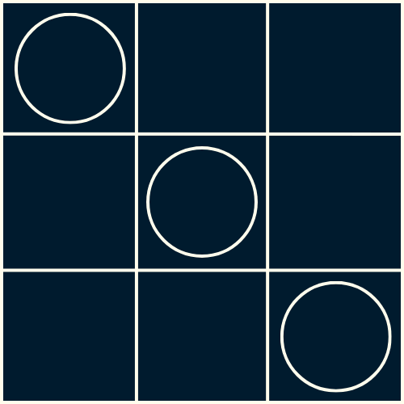
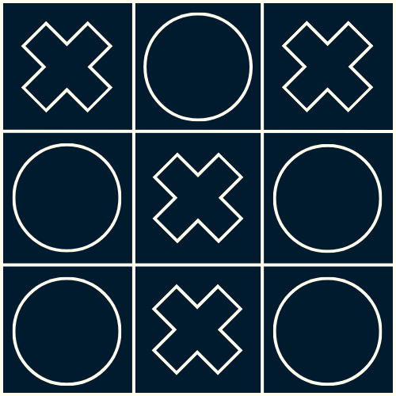

Small introduction
You're here because you've forgotten how to play, haven't you? 👀 Don't worry, it's not so bad, you have detailed explanations of Tic-Tac-Toe and its variations! Take the time to read their rules carefully to fully understand the specifics of each game mode (even if it's not very useful to be honest with you, but don't tell anyone 🤫).
Rules of Classic Tic-Tac-Toe
Classic Tic-Tac-Toe, or Player vs. Player, is played on a 3x3 grid. The X and O symbols are chosen randomly; there's no need to create a war over a single symbol 😆. The goal for both players is to align three of their symbols in three possible ways: horizontally[1], vertically[2], or diagonally[3]. To win? Be the first to align three of your symbols. If all the grid squares are filled without either player managing to align three identical symbols, the game ends in a draw[4]. Simple, isn't it?




Rules of Tic-Tac-Toe VS IA
This game mode has a slight difference compared to classic Tic-Tac-Toe. While it's still about playing on a grid of the same size, aligning your symbols against another player… the other player is the AI, not another human 😬. You can still choose between the same two symbols, always randomly, and the AI will automatically choose the opposing symbol. Be aware that the AI will always play first if it's marked with the X symbol, but the goal remains the same: align three of your symbols before the AI aligns its own (as shown in the diagrams right here). One last thing, the AI is REALLY formidable (yes, you can say that later when the AI beats you, it's my fault 😅), so be strategic and good luck!